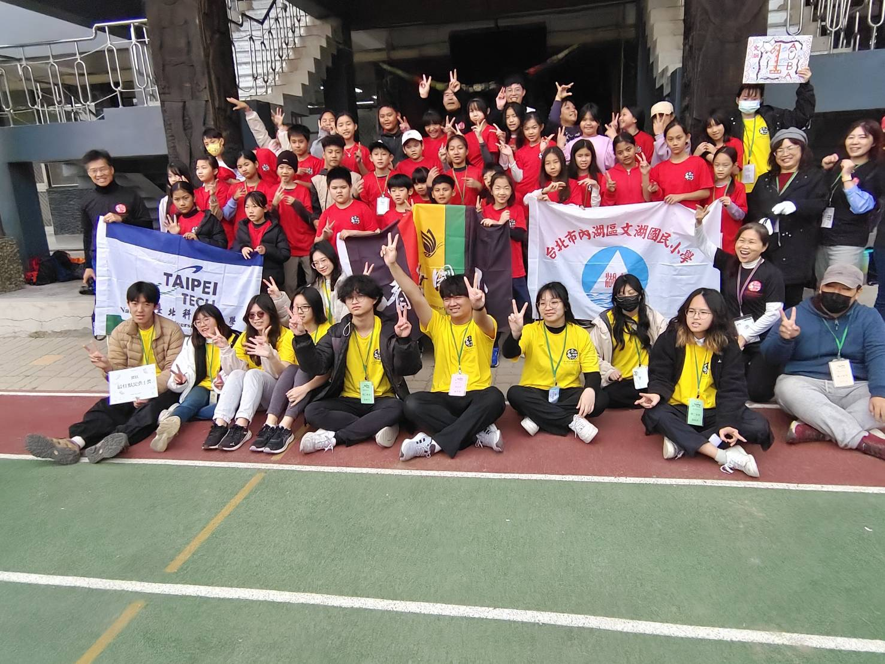
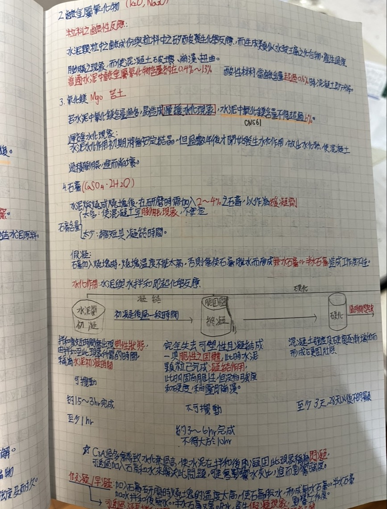
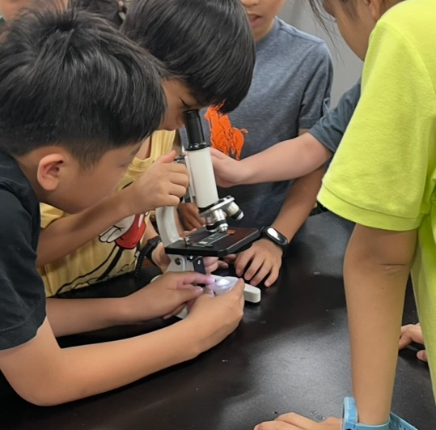

「我這一路走來，幾乎每一次真正的轉折，背後都站著一個願意多看我一眼的老師。」
好老師改變一生，普通老師導致階級複製，壞老師造成脅迫與傷害。
我很幸運，也很不幸，三種老師我都真真實實遇到過。
靠自己買書自學考上北科大之後，我發現自己最喜歡也最擅長的，是幫助那些「想努力卻找不到方法」的學生。正因為曾經深陷泥沼，所以我更懂該怎麼陪他們一步步走出來。
國中時我是個 5C 的吊車尾學生，總覺得自己無可救藥。直到國二遇到這位國文老師，因為不想讓他失望，我第一次拿起筆認真上課，最後模擬考拿到了 1B++。這是我第一次真切感受到，原來老師溫柔的一句話，真的能讓一個想放棄的孩子重新擁有試試看的勇氣。
高二工程力學遇到黃老師，我當時像個渴望被肯定的孩子，總拿著課本硬要去問他問題。在他一次次耐心解答與鼓勵下，我的力學成了系排第一。他讓我知道，好的老師不只是傳授知識，更是能讓學生打從心底相信「我做得到」。
高三那年，家裡發生變故陷入經濟困境。我的英文模考永遠只有 40 幾分，從沒讓他驕傲過，但他卻默默幫我申請午餐費減免、甚至幫忙代墊學費。這份恩情讓我徹底明白，一個老師願不願意幫學生，從來不是看這個學生值不值得，而是看他那顆願意付出的心。

陪伴小朋友一起學習，打破地域的限制，用沒有距離與偏見的方式，為孩子們打開新視界。

因為自己是純自學過來的，比起讓學生死背公式，我更願意花時間帶他們建立自學思維，幫他們一步步堆疊起解題的成就感。

帶領中小學生親手做科學實驗。最讓我開心的，是看到他們在動手做的過程中，眼睛裡閃爍著對未知探索的好奇與光芒。
因為我自己經歷過家庭變故、學費繳不出來的時候，我很清楚那種「想念書卻受限於現實」的無力感。如果你或你的孩子真的想好好讀書，但家裡經濟狀況非常困難，請直接發郵件跟我說明。只要時間與地點（雙北地區）配合得上，我願意提供無償的家教輔導。
📍 地點： 大台北地區（實體面授為主）。
📩 聯絡方式： 來信請簡單說明目前的學習狀況與家庭情形即可，我會保密並盡快回覆。
雖然現在職涯走的是土木專業，但我一直很喜歡教學。無論是帶營隊、分享自學經驗還是教學生，我都希望能用自己的力量，讓卡關的人重新相信自己可以做得到。
返回吳東洋個人首頁